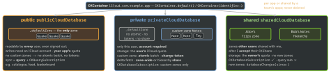
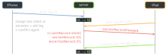

ios-platform · folio
In one line: Apple’s hosted database behind the user’s iCloud account. A container holds three databases — public (everyone, your quota), private (this user, their quota), shared (zones others shared with me). Records live in zones; a save is checked against the record’s change tag, so a conflict is an error you resolve, never a silent overwrite. Only custom zones give atomic writes, change tokens and sharing.
Download PDF Print view LaTeX source


Records
CKRecord=recordType+ fields (String, number, Data, Date, CLLocation, arrays,CKAsset,Reference), ≤ 1 MB without assets.CKRecord.ID=recordName(yours, e.g. UUID → idempotent retry) +zoneID: a record never changes zone.- System fields:
recordChangeTag,creationDate,modificationDate,creatorUserRecordID,parent,share. Local cache? keepencodeSystemFields(with:)or every save conflicts. CKRecord.Reference(recordID:action:): same zone only;.deleteSelfcascades.CKAsset(fileURL:): uploaded apart, fetched to a temporary file — copy it.
Operations vs async API
- Async (iOS 15):
record(for:),save(_:),modifyRecords(saving:deleting:…),records(matching:…),recordZoneChanges(…). Results are per item ([ID: Result]): no throw ≠ all saved. - CKOperation subclasses (
CKModifyRecordsOperation,CKQueryOperation, …): per-record callbacks, progress, cancel, dependencies, long-lived. Default QoS is low. - Save policy:
.ifServerRecordUnchanged(default, tag must match) ·.changedKeys/.allKeys(overwrite, no check).isAtomic(defaulttrue): all-or-nothing per custom zone.
Example — save, and resolve a conflict
let db = CKContainer(identifier: "iCloud.com.example.app")
.privateCloudDatabase
func rename(_ id: CKRecord.ID, to title: String) async throws {
var rec = try await db.record(for: id) // carries change tag
for _ in [1, 2, 3] {
rec["title"] = title
do { _ = try await db.save(rec); return } // tag must match
catch let e as CKError where e.code == .serverRecordChanged {
guard let server = e.serverRecord else { throw e }
rec = server // merge INTO the server copy (new tag)
} catch let e as CKError where e.retryAfterSeconds != nil {
try await Task.sleep(for: .seconds(e.retryAfterSeconds ?? 1))
}
}
}The change tag turns a race into an error

Queries, indexes, schema environments
CKQuery(recordType:predicate:)+ sort, paged byqueryCursor. Indexes: Queryable (equality; onrecordNameto list all), Sortable (ranges, sort), Searchable (tokens).- Development: an unknown type or key is created on save. Production: it is an error. CloudKit Console → Deploy Schema Changes; production is add-only. Xcode runs use Development; TestFlight + App Store use Production.
Subscriptions + silent push
CKQuerySubscription(public + private) ·CKRecordZoneSubscription(one zone) ·CKDatabaseSubscription(private + shared, every custom zone — how you hear of new shared zones).shouldSendContentAvailable = true→ silent push (Background Mode Remote notifications, no prompt). Coalesced, droppable: a hint to fetch, not data.
Account
accountStatus(): .available · .noAccount · .restricted · .couldNotDetermine · .temporarilyUnavailable. On .CKAccountChanged, a new userRecordID() → wipe old data.
Errors you must handle — CKError.Code
serverRecordChanged | merge into e.serverRecord, save again |
partialFailure | per item: e.partialErrorsByItemID |
batchRequestFailed | atomic zone: another item failed; fix, resend |
requestRateLimited, zoneBusy, serviceUnavailable | wait e.retryAfterSeconds, then retry — never a hot loop |
limitExceeded | too many items / bytes: split the batch |
changeTokenExpired | refetch the zone from a nil token |
zoneNotFound | create the zone, retry |
userDeletedZone | user wiped iCloud data: ask before re-upload |
quotaExceeded | user’s iCloud full: tell them, stop retrying |
notAuthenticated | no account: check accountStatus() |
Traps
- Default zone “to keep it simple” — no atomic batch, tokens or share; create a custom zone.
- Resaving your own copy after a conflict — old tag, fails forever.
- Fine in Development, empty in Production — schema not deployed.
- Private-DB
quotaExceededis the user’s storage, not yours.
Remember
Container → 3 DBs → zones → records. Custom zone = atomic + tokens + share; stale tag = merge.